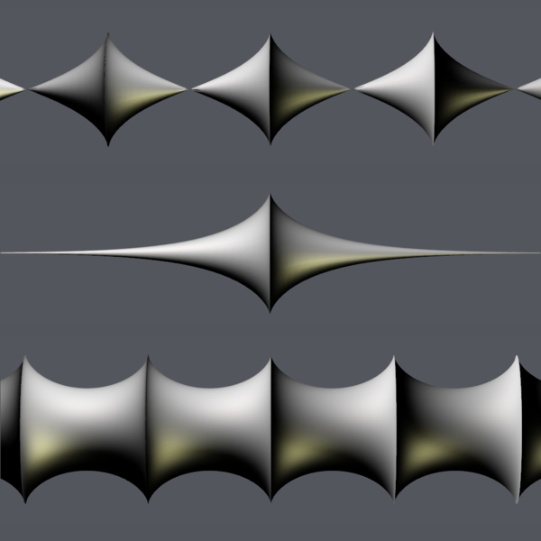
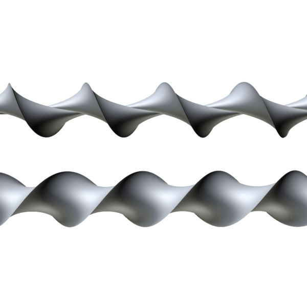
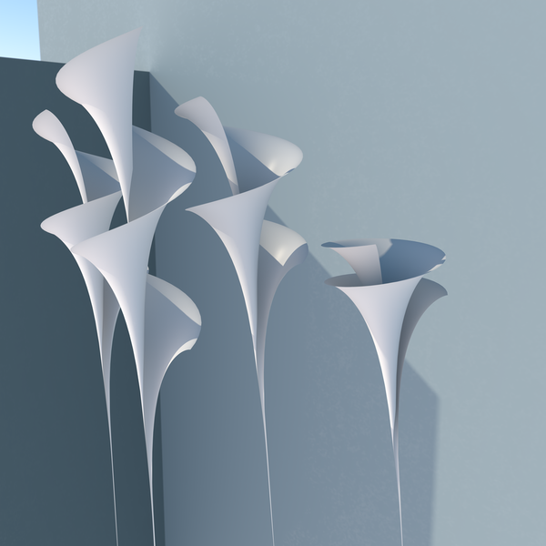

Surfaces with constant negative Gaussian curvature, with rotational and screw-motion symmetry [1].

Pseudosphere (middle), and conical and tubular Minding surfaces (top and bottom).

Conical and tubular Minding twizzlers.

Dini surfaces, in the associate family of the pseudosphere.
References
F. Minding, Wie sich entscheiden lässt, ob zwei gegebene krumme Flächen auf einander abwickelbar sind oder nicht; nebst Bemerkungen über die Flächen von unveränderlichem Krümmungsmaaß e, J. Reine Angew. Math.19(1839), 370—387 [1578218].